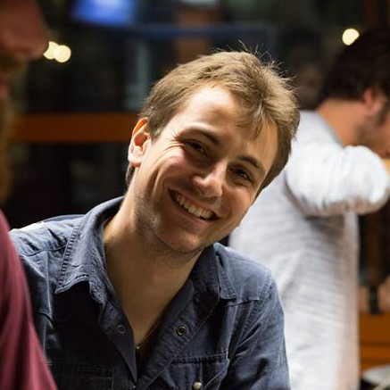

Steve Henriquet.
Ingénieur en Sécurité réseau.
A Propos
| Age | |
| Permis de conduire | B |
| Langues | Français (Langue maternelle), Anglais (Niveau C2) |
| Compétences |
Automation (Ansible, Jenkins, Jinja2, Python) Pulse Secure Broadcom (ProxySG, CAS) Netskope Splunk FireEye Algosec Développement Web Technologie Cisco (router, switch, Ironport) |
| Outils |
Jira, BitBucket, Confluence Jenkins, Ansible Terraform, HashiCorp Visual Studio Code, Vim Wireshark, Tshark Ettercap, Nmap, Metasploit, Burp, Nessus Docker, Docker compose Prometheus, Grafana JetBrains GitHub, GitLab |
Projet professionel
De nature curieuse, je me suis toujours intéressé à de nombreux domaines et j'ai toujours cherché à être le plus
polyvalent possible. Bien entendu, certains domaines de l'informatique m'intéressent et m'attirent plus que
d'autres, en particulier la sécurité, le réseau et l'automation. Dans l'optique de me perfectionner en cybersécrité, je suis
parti en Suisse suivre un semestre de cours en sécurité de l'information.
Ensuite, j'ai effectué un stage chez Escaux (maintenant Dstny), cela m'a permis de travailler sur
des projets demandant des compétences diverses.
Après la sortie de mes études, j'ai eu l'opportunité de travailler en tant que Network Security Engineer au sein de la société
SWIFT me permettant de faire mes premières armes en Cybersécurité, d'acquérir de l'expérience pratique, d'intéragir avec
des systèmes réels (Non plus comme aux études où tout reste très théorique) et surtout de
me rendre compte que j'étais un passionné de l'informatique en général et que l'automatisation m'intéresse vraiment!
Enfin, j'ai eu la chance de partir pendant 5 mois en cyclotourisme à travers l'Espagne, le Portugal et la France
voyage riche en expérience et en rencontre qui m'a beaucoup appris.